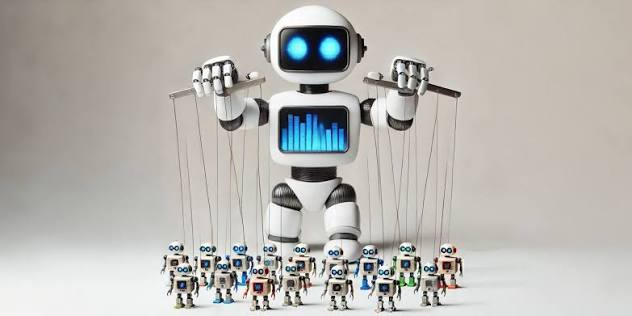
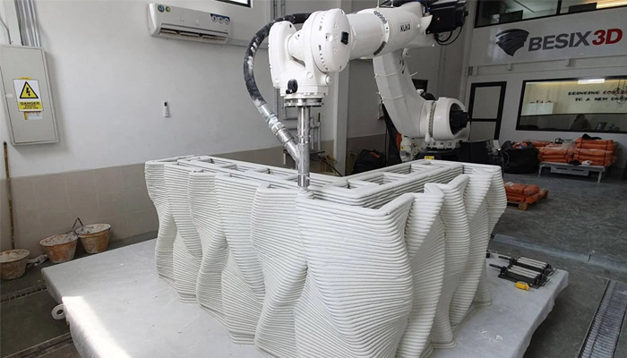
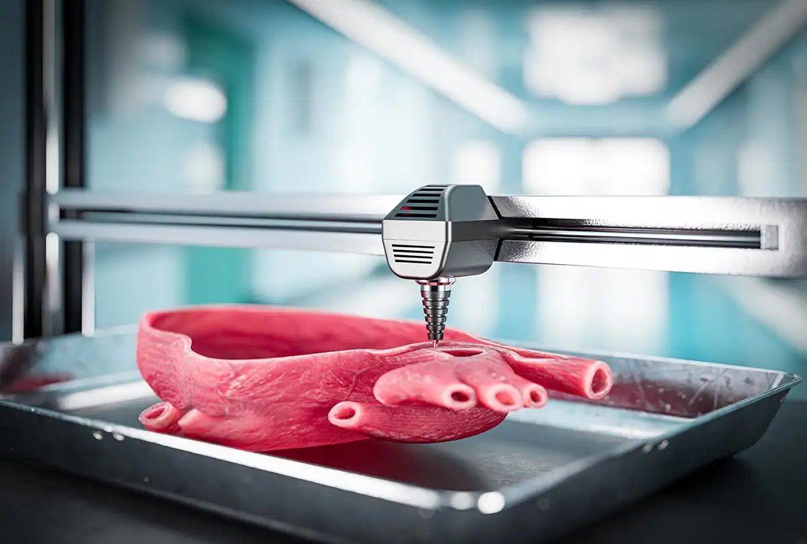

Technologies then vs now vs in the future
What upcoming technologies should we be on the lookout for?
Agentic AI
SourceJensen, B., & Strohmeyer, M. (2025). Outlines of an agentic future. In Rethinking the Napoleonic staff: Agentic warfare and the future of military operations (pp. 19–35). Center for Strategic and International Studies (CSIS).
AI Agents Working Together

AI agents can break complex goals into smaller tasks and split the responsibilities.
- One agent writes the code for a stock website.
- Another agent tests the website as a user.
- Another reviews the results.
- The process repeats until the website is near perfect.
SourceHowells, T. (2026, January 20). How AI agents will impact work, learning, and everyday life by 2030. Cambridge Open Academy.
So how does it affect you?
How will it affect the job market?
Robotics in Construction

SourceBarclays Investment Bank. (2026). Barclays Investment Banking.
3D & 4D Bioprinting
Problems in Our Body Systems
What Is Bioprinting?
3D Bioprinting

SourceNoroozi, R., Arif, Z. U., Taghvaei, H., Khalid, M. Y., Sahbafar, H., Hadi, A., Sadeghianmaryan, A., & Chen, D. (2023). 3D and 4D bioprinting technologies: A game changer for the biomedical sector? Annals of Biomedical Engineering, 51(8), 1683–1712.
4D Bioprinting
SourceNoroozi, R., et al. (2023). 3D and 4D bioprinting technologies: A game changer for the biomedical sector? Annals of Biomedical Engineering, 51(8), 1683–1712.
Agentic AIRoboticsBioprinting